I chose to use orientation control to control my robot. I took 15 readings at around 23.9 degree increments give or take a degree or so. Every time my robot gets within 0.5 degrees, a variable called "hold" is set to true, which stops the robot. Then the robot will continue looping until it gets an IMU reading for the current yaw of the robot. Then my robot delays itself until it gets a ToF reading. After it gets its ToF reading, it sets the "hold" variable to false which allows the robot to continue to the next angle.
Below is the IMU condition statement where the robot ToF sensor is ran and the yaw from the IMU DMP is retrieved. Both are then stored in an array so I know the exact distance that was ranged at that heading angle.
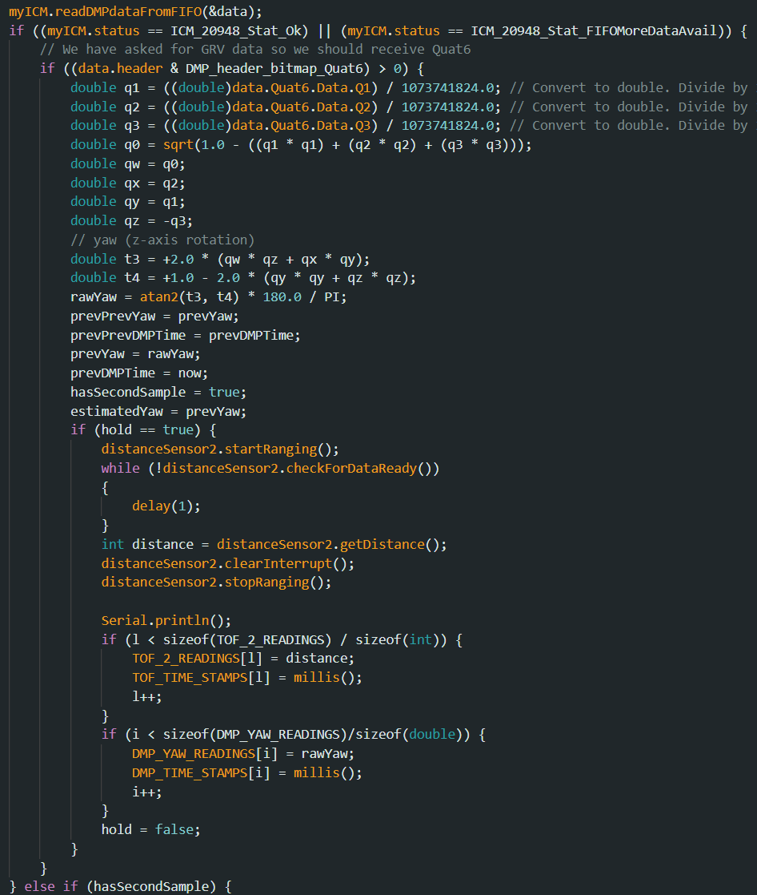
Below is where the robot sets the "hold" variable to true when the robot's heading is within 0.5 degrees of the targetYaw. It also increments the new target heading angle by the "turnAngle" which I can set as a user input for this command. You can also see there is some code to account for the fact that the robot's IMU DMP readings go from 0 to 180 and then -180 to 0. I adjusted the current target yaw from "currTargetYaw" to "adjCurrTargetYaw" which takes a 360 degree angle and converts it to 0:180/-180:0.
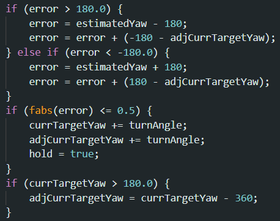
Results
Below is the video of the robot running at point (-3, -2) and the graph of the raw angles and raw distance readings plotted in a polar coordinate plot with no offsets applied and not rotated.
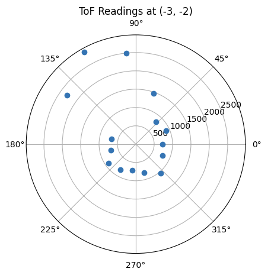
As you can see from the video, the robot wasn't spinning in place, and instead, it was spinning about its right front wheel. I tried many quick fixes to get the robot to spin in place, but I believe since I hadn't charged my battery for a week, it didn't have enough power to overcome the friction of spinning in place. I also tried spinning the right motor with more power with a PWM multiplier ("rightMultiplier") as seen below in the code.
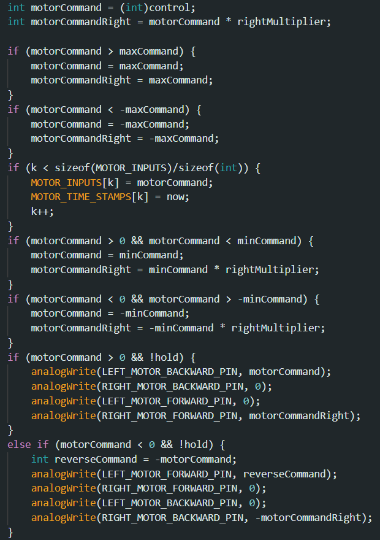
To convert the yaw readings and distance readings to cartesian units I used the transformation matrix below.
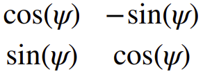
Speeding up the right motors to get it to move, didn't work however, so I kept it as is and accounted for the offset of the robot spinning around its front right wheel. I measured it and the robot was 55mm to the right of the robot's center and 47mm forward of the center. I also measured that the sensor was 80 mm from the center. This gave me information to offset the sensor readings in my transformation matrices. In the image below, you can see how I accounted for the offset sensor and pivot point. The code below also converts polar coordinates to cartesian. I also needed to offset the angles of every reading by -277 degrees since the robot was initialized to start facing -277 degrees since I calibrated the starting angle against one of the walls and it was about -277 degrees. You can see it start at -277 in the video.
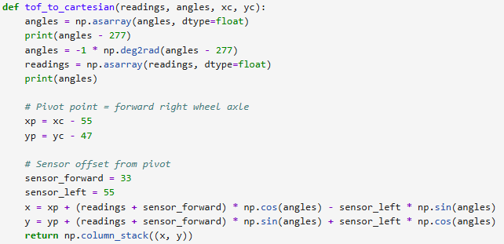
You can see the difference with and without the offset in the graph below. The difference is quite small, but it just makes the final mapping a little more accurate.
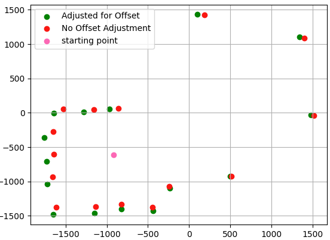
You can see the difference with and without the offset in the graph below. The difference is quite small, but it just makes the final mapping a little more accurate.
Below is the rest of the raw polar plots of distance readings and angles with no offset adjustments applied yet and not rotated.
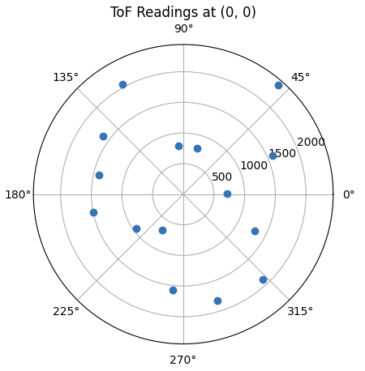
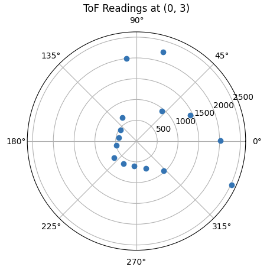
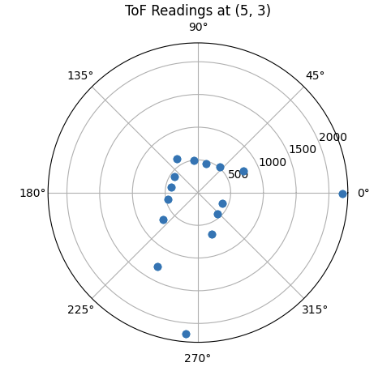
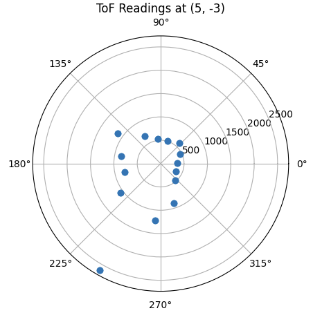
Using my transformation function with offsets applied and rotation adjusted, I got the final mapping below.

I made a line based mapping overlay as well and saved the coordinates for the lines.
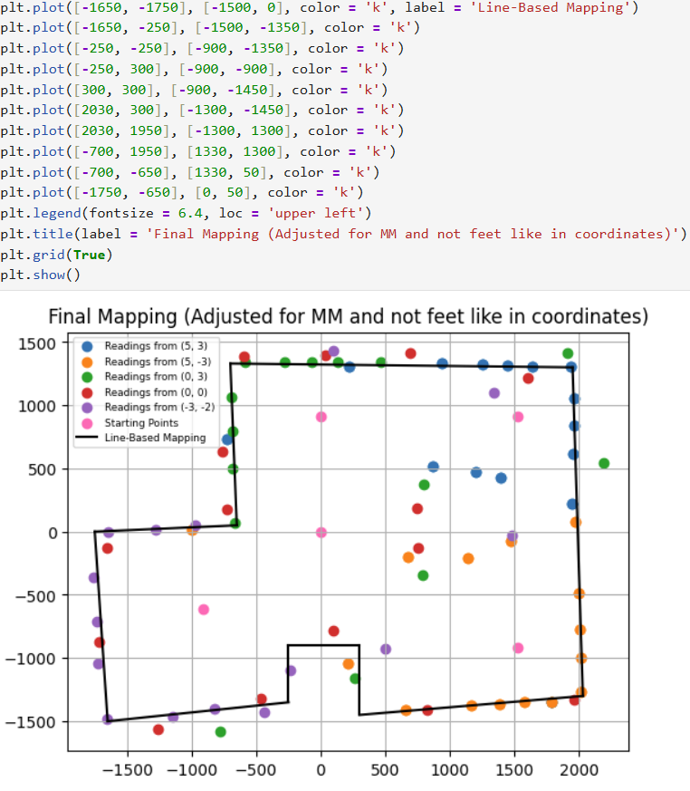